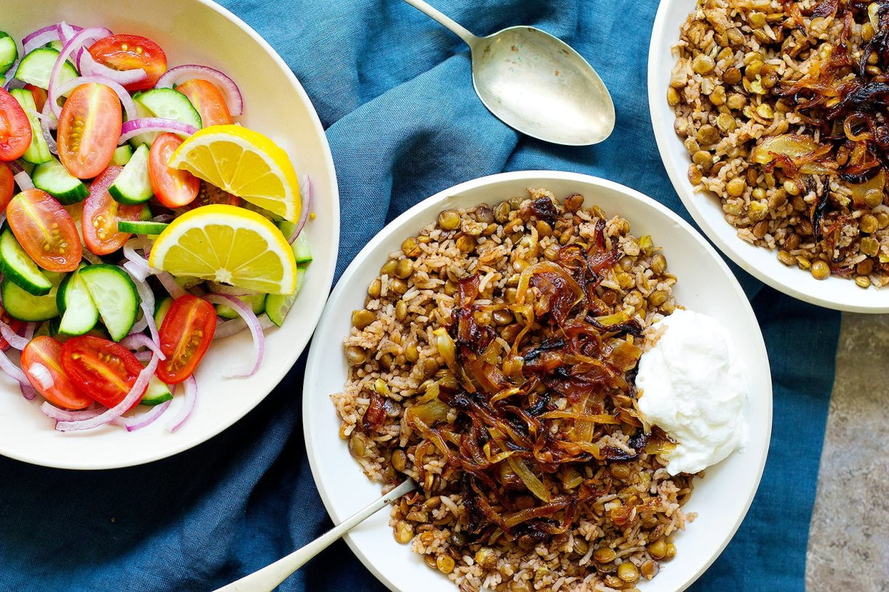
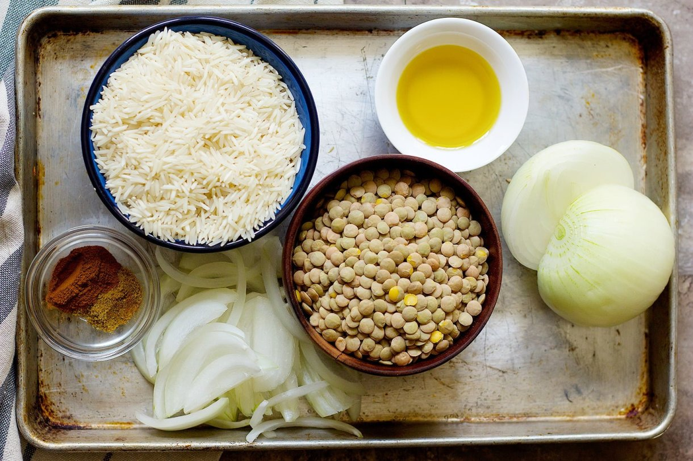

Mujadara: Lebanese Lentils and Rice with Crispy Onions
Mujadara is a simple lebanse lentil and rice dish with crispy onions that's packed with flavors. This Mujadara recipe calls for a few ingredients and is very easy to make.

Mujadara with salad and yogurt.
Ingredients
Carmalized Onion
5 tbsp olive oil
2 onions thinly sliced
Mujadara
2 tbsp olive oil
1 onion chopped
1 1/2 cup lentils
1 1/2 cup long grain rice
1 1/2 tsp cumin
1 tsp cinnamon
4 cups water
1 tsp salt

The ingredients required to make mujadara.
Preparation
Caramelized onion
Heat olive oil over in a pan over medium heat. Cook onions until brown and golden. Set aside.
Mujadara
Heat olive oil in a pot over medium heat. Saute onion until golden brown.
Add in lentils and cook for two to three minutes.
Add rice, cumin and cinnamon to the lentils. Stir well so everything is completely combined.
Pour water into the pot with salt, bring to simmer and let it cook for about 30-40 minutes until the lentil and rice is completely cooked.
Mix the lentils and rice with caramelized onion and serve with plain yogurt and salad.
Recipe Notes
You can use jasmine or brown rice for Mujadara recipe but cooking time will be different.
Check the rice after 30 minutes and if it's not cooked, add 1/4 cup more water.